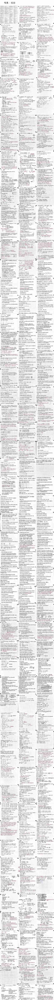

十八岁前的"我"们
前言
你好，我不知道你是谁，但请找个地方坐下，或者躺着，help yourself，接下来的内容不会很短，虽然它仅仅有关于我活过的贫瘠的前17年。
你可能会说我是标题党，不是18岁前吗？没错啊，18岁前的时间跨度不就是17年
你可能又想，写自传是一个吃力不讨好的工作，写的好有什么用，写的不好那就更没必要写自传了，那问题来了，干嘛写它？我只是觉得，既然莎比可以写三个人的一天写上成千上万字，那我为什么不能写，我想写，便写了，与看的人又有什么关系呢，你说是不吼，看的人
现在是2025年的4月12日，我在昨天晚上心血来潮地想写一篇长文配到我刚刚搭建好的个人博客上，于是，便有了以下的杂乱的回忆，你可能会怨恨我写的杂乱，又岂知道我的这17年其实就是杂乱的，我有时甚至会把梦掺到现实中，又有时会把现实当成梦
这17年
我们看看吧
学海无涯
幼儿园
2006年11月1日，哦，真是个不吉利的日子，那么多1，你怎么不双11出生呢，非得留个0当遗憾…农历9月11日，更不吉利了，多好的911，使飞机碰撞箱与大楼刚体重叠
伤春悲秋，秋是用来悲的，哈，我的人生是用来悲的，此言不假
我们直接略过许多，从幼儿园开始
我在幼儿园加了两个个兴趣班
一个是学心算和算盘的，我对那个地方最深的印象是我和几个要好的同学经常在上课时离开座位，排成一条龙悄悄摸上讲台，然后跟着老师在黑板上板书的运动轨迹左右摆，在老师快结束板书的时候又冲回座位上，是的，就是这样，我现在回忆起这个就跟梦一样，真的很逆天
但就是这样一个学生后面还是得了“初级心算小能手”的奖状，并确实可以秒算很多个多位数的加减（有多多呢？差不多10个3或4位数算加减那样的程度），不过现在你叫我展示一下的话，我肯定展示不出来了，小学的时候就已经丢掉了（笑
另一个兴趣班是学画画的，呃，更确切的讲应该是学上色的，我印象中没画过什么画，就是画了也没保存下来，在这里我经常展现出我乐善好施的天赋，将我本就不多的水彩笔分享给其他同学（不管是认识的还是不认识的）
于是就经常有水彩笔找不到的情况，甚至乎在某次急匆匆的借笔中，某个同学还把我的水彩笔盒子摔裂了一块，当时我婆和我爸就告诫我说管好自己，不要借给别人东西
但我还是会借，没办法，谁叫我这个人就是这样，只是借给别人的时候更小心谨慎了些，会在脑子里记下借笔的人的名字和借了哪个颜色的笔，或许我的速记能力就是从这里开始培养的吧（笑
接下来我们把时间轴推到小学
小学
小学六年呐，那事可太多了，但大事却太少了
关于我是哪个年级离开那栋临时教学楼（应该说是临时教室，因为它只是一个平房）的，我已经记不大清了，反正可以知道的是，从入学到那个年级，9班的教室一直都是一个远离正式教学楼的，附近没有厕所的，甚至周围长满了草，有同学说经常在周围看到蛇的，只有一层的平房
而我，是9班这个老师带过的最差的一届班级的一员
一年级，我们教室周围没有厕所，要上厕所只能去遥远的教学楼上（其实不遥远，但基于一年级学生的体质，当我跑到教学楼上完小的再跑回来时，上课铃就会恼人地吵起来，导致我没有时间去玩），所以，为了不浪费宝贵的课间时间到上厕所上，我决定，就地解决！
是的，就是就地解决，当时的我可以说是既害臊又不害臊，若我想上小的，我会到教室楼房的后面那块经常有人说看到蛇的草地去解决，有的时候就会不碰巧地被一些去教学楼上厕所的男生女生看到…但我stick to my position，这个解决方案在教室附近建起临时厕所前我一直用着
后面得说起小学的两个重大转折点了，恕我的长期记忆力不是很好，我实在记不得这两个转折点哪个前哪个后了，所以我就随便挑一个先开讲
校园结义
三年级，不记得上学期还是下学期，有三个莫名其妙认识的，莫名其妙关系很好的，相同点应该只有都戴红领巾穿校服的小学生，下课时他们经常聚在一起，玩其中一个人迭代了十来版的纸上游戏，小兵大战（有的时候会玩其他的，但这个是最经典的）
他们成立了一个游戏组织玩这个游戏本，起初叫罗大屁集团，最终boss是罗小屁和罗中屁，后来我们的老大一拍脑子改国号为四维（其实不是国号，只不过是把自己的外号改了），我们就叫四维集团，对头是罗大、中、小屁（不过这倒是四年级或五年级的后话了）
在一个阳光明媚的早晨（或许是大课间？），这三个都读过三国演义的小孩都拍了一下自己的脑袋，他们脑海中浮现桃园结义的大场面：那时正值桃花盛放之季，两个大汉和一个弱男子齐聚桃园煮酒，三人喊着“不求同年同月同日生，但求同年同月同日死”的豪言，决定从此同生死，共患难
然后一切就都自然而然的发生了，三个被自己洗脑的小孩一下课便齐刷刷地跪在教室后门的外面，后面的事不需多讲，你大概也能脑补出一些场面，这件事过后，太史公便在棺材里曰：此谓“校园三结义”是也
这三个小孩截止目前，一个在西北大学，一个在杭州电子科技大学，一个在华中科技大学，后话就待几年或几十年后再来写吧
暗恋
不记得几岁，更不记得几年级，那时正是补课现象猖獗，补课机构收入堪比开矿的年代，我爸，或许也有我妈，决定把我丢去小星星补课机构，学啥？学英语。我不知道这样做的目的是什么，或许是老生常谈的赢在起跑线上，又或许只是让我少烦他们，抑或是我的两天的假期时间让他们眼红了（bushi），亦或是其他什么原因比如看其他孩子都去补了于是跟风让我也去补，反正祸根从此种下，补课的种种经历是我探及自己性格形成原因时逃不开的话题
起初小学还是幼儿园学的小红帽白雪公主英文版，后面就学领跑，再到领跑提高班（说着很高大上，其实教材都不知道是哪来的，我甚至都觉得是补课老师聚在一起自研的）
领跑提高班，我在的是一个挺压抑的班级，至少我这么觉得，当时老师似乎是要求写完书上的题才能在放学的时候走的，但有时我死活看不懂书上的单词，急得跺脚
后来有一个小星星自己的大考，根据考试成绩分班，好的一批放一起，学新版新概念（就是青少版），差的一批放到一起，学老版新概念（那个封面上四个圈，看着就让人没有食欲的的版本）
很不幸地，我因为某些原因没有考好（这些原因和知识关系不大，和性格关系大，就是我的一身反骨驱使我去觉得这张考试卷子有些题出的不准确，模棱两可，所以我决定按我所想的写而不是按考试题目来写，并寄希望于改卷老师能看到我的答案然后反思他的题可能出错了然后只给我分不给其他根据考试题目写的学生分，是的，当时我就是这么犟），离90差一两分（满分100），但只有90分以上的人才能分到好班，于是我理所应当地被淘汰到了差班（不过也没有差的离谱就是了，反正人均素质成绩是比我高中高的）
然后我就学旧版新概念学了好几年，一直学到初二，直升班考试前，我学完了新概念一二两册
上了初三，我就没有补课了，一直到高一我又回归补课机构补了一丁点，后来就没去过补课机构补课了，到了高二更是只到私人补课的地方补了
“Stop！打住！你标题不是暗恋吗，你写的啥，这里有提到人吗，这不是补课吗，你干脆把小标题改成补课得了，死标题党，吃我一拳！”
莫急，兄弟莫急，这行文里处处无她，在我眼里却写尽了她口牙
或许是领跑提高班，或许是这之前的某个班，但我这里就写领跑提高班这个确定的转折点吧，我和她都在这个领跑提高班
课程计划到一半，或者是临近期末，我注意到了她，在这之前我可是认真学习的好学生嗷
我喜欢她
我不懂喜欢是什么，我不懂男男女女，我不懂天若有情，我不懂人间沧桑，但我就是喜欢她，我不知道为什么喜欢她，不知道喜欢她的哪里，我只知道，我喜欢她
但正是因为我不懂这些种种，我什么都不懂，我不知道怎么向她表示喜欢，我也不知道什么提升自己来吸引他人，我不会a上去，也不会发育加一波，我是沙币，于是接下来到来的就是
无可救药的暗恋和异想天开的意淫
后来者写这些就是容易站在上帝视角看这些蠢事，我不怪那时的喻轶，他这么做有他的理由，虽然他现在已经死了，那年的喻轶和一些喻轶死在了高考后的那个暑假，尸体由我亲自埋葬，这些都是后话
我开始做一些痴心妄想者做的事，这些事我就不写了，男看男鄙夷，女看女恶心，我看我悲哀，她看…还好她不会看的
补课的时间是短暂的，我只能通过寄希望于和她在同一个班的时间多一点来满足我喜欢她的欲望，可惜天不遂人愿，我在分班大考中被分到了差班，而她被分到了好班，没错，就是那场我考差了的大考，后来想想…算了还是不想吧，相信这是最好的安排
然后我就疯了（不是那种疯嗷，这里只是非常夸张而已，我很确定我是一个冷静的人（笑））
后来的新概念课其实我都是心不在焉地听的，但鉴于课太多了（想象一下，两本新概念，每篇课文都上两个小时，你看看有多少次课吧），再加上新概念课会要求每天听15分钟课文录音（这件事我坚持了2年，两年的每一天晚上睡觉前都会用我那个老年机放，就是拿这个当安眠药吃，效果极佳，大多数情况下都会放到下一天早上，因为有时没关就直接睡着了），就是再傻的人，上了这么多课，听了这么久录音，也会培养出人们常说的很难培养的“语感”，没错，我的英语语感就是这么来的，有部分原因是拜她所赐
为什么我上这么多课？没有她在的课不是更难过吗，那我不应该从此以后再也不补课吗？哦，我不是这样的，我只是异想天开的认为好班可能会和我们一起上下课，然后或许我就有机会在上课路上或课间或下课路上看到她，没错，就是这么个事，我是沙币
和她的事在小学就是这么点，有一些无关紧要的比如我们三兄弟满教学楼跑的时候我会看到她，比如有时放学后我们三兄弟玩很久后我回家路上看到她从琴行上完课出来，这些事里我和她都没什么大的交集，所以就不写了，要真说到交集，请看初三
以上，是我的小学，和幼儿园并称我最轻松的两个时期
初中
我后悔上了青荷班
青荷班是我们那的最好的高中办的，寄生在它的附属中学的一类班，它网罗附近所有小学成绩好的那批人，它每届招两个班，这两个班里每届都有清北生，所以，它的资格考试难度巨大，选拔机制也是尤其苛刻，笔试面试简直就是入职而不是入学，里面的人都是精英中的精英
我们这届除外
我们这届扩招了一倍，而且还有很多关系户涌进来，我是被扩招的一员
可想而知，我到了一个不属于我的高度
结果一定是痛苦的
我确信
青荷考前集训营
我想从小学备考青荷班讲起，因为要考青荷班，我的父母还决定让我报小星星的“青荷考前集训营”，在这里怎么说呢，我好像是一班的，然后我暗恋的她在二班，反正我们不在一个班，我知道她在二班还是因为这个集训营在结营时会组织团健一次，我才知道她也在
再得说这个集训营
语文老师要求班里的每个学生都上台做自我介绍，这似乎是我这辈子第一次当着二三十个人的面“演讲”，很可惜，我讲到一半就不知道怎么讲了，我的大脑在那时是completely blank，我“唉”了一声，然后下台了
数学老师是个畜牲
在小学时我对老师并不非常讨厌，但这个老师让我对“老师”这一职业的厌恶上升到了极点，从此我对“老师”有了一种不可磨灭的刻板印象，对，就是从个人上升到集体
在某一次课上，某个同学和我说话，被这个畜牲发现了，于是他抄起旁边的凳子向同学砸去，这位同学还算有骨气，背起包转身就走了，我是没那个骨气的，也没有那么强大的反抗决心，这位畜牲便又严词警告我不要和这种人交好
在同一节课，我做完了畜牲在课堂上布置的当堂作业，于是便看着草稿本走神，不知道为什么，畜牲看着我说“写完了没有”，我回我写完了，它便叫我拿着书上台来给它看，它拿着我的书，又看看自己的书，又看看我的书，把书摔在桌上，给了我一巴掌
假如是现在的我，假如我带了刀，我非得叫他“流血五步”不可
初一和晚自习
最终我还是考上了青荷班，但像我前面说的，我不适合这里，我不适合青荷班，这里的学习强度太大了，而我当时还是一个只会玩游戏，和同学胡吹海吹的小屁孩，所以我的初中成绩自然而然地差，最高就是班上20+名，最低都吊车尾了
初一有自愿晚自习（这个倒是真自愿，不是反讽），我一开始打算的是上两节晚自习向老师证明我爱学习学习使我快乐之后就不去的，但是捏，晚自习有一个点名环节，你猜猜点到了谁，诶，我暗恋的那个，从此我就决定这晚自习有几次我上几次，为了什么？为了向家长老师还有她证明我很上进（不过他们肯定是不会在意我上不上进的）
你可能会觉得，我上晚自习？！那我的学习是不是就会好起来了，就应该名列前茅，然后引起她的注意，然后两手抓直接走上小说男主的路？
哦，bro，那是我的幻想罢了，晚自习我常常写不完作业，不是因为时间不够，相反，比我成绩差的人都能写完作业并酣畅淋漓地刷题直到颅内高潮，但我不一样，嘿，我tm在设计游戏本和画火柴人漫画，要我说喻轶这b崽子是真的不吃几堑就不会想上进的（后来的事也确实让我吃尽了苦头，了了几百几千字是道不尽其中的心酸的，我也只能在这里调侃了）
那时的晚自习我经常和一个青荷考前集训营的一个当时素不相识的同学坐在一起，当时我们常常聊游戏，他聊他玩的游戏，我聊我玩的游戏，然后他玩我聊的游戏，我玩他聊的游戏，两个人就这么交好了，初中的时候我只有一次月考比他高3分还是几分（当时因为这次考试，我调侃了他少说一个月，所以我记得这么清），其余情况下他都是班上名列前茅的存在，截止目前，他在西北农林科技大学，这是后话，按下不表
我可能只能用浑浑噩噩来形容我初一初二的状态，因为我确实没学什么东西，也和喜欢和几个同学小打小闹，就和…小混混一样？差不多吧，想不到你喻这个老实人也有当混混的时候吧（手动滑稽
不过现在往回看的话，初一似乎我也受过一段时间的校园霸凌？这方面我记不太清了
共学党
这无疑是我初中的一个重大转折点了，说起来也确实奇怪，这个重大转折点的持续时间是真的长
共学党是一个组织，一个以学生群众为主体的共学主义组织，党章是我起草的，但是现在应该找不到了，它的前身是拜Kealthy会，一个以教师Kealthy为核心的亲教师派，
你可能会说，叽里呱啦什么乱七八糟的，哎，你只需要知道有这两个组织就行了，剩下的我来补充
在初二，我们6班遇上了一个s体育老师，在体育课上他要求我们疯狂跑圈（不过他对跑圈的人还是睁一只眼闭一只眼的，就相当于走也行）且没有自由活动时间，这时就有一个英语老师站了出来，她要抢走我们的体育课，这要放在其他正常点的班级，肯定是一件怨声载道的事，但我们摊上了这样一个体育老师，对比之下，大家纷纷拥护起这位英语老师，她英文名是Kealthy，于是便有三个学生在一节没有被Kealthy解放的体育课上，众目睽睽之下，拜天拜地，成立组织，史称“拜Kealthy会”，其中一个人是我
但是很不巧，在某一次英语早读，由于有一个做英语手抄报的作业在那时要交成果，场面一度混乱不堪（可以说是一片混沌了），Kealthy一怒之下责令全班同学交2000字检讨
这在细想之下挺合理对吧，只不过字数有点多而已，毕竟是同学有错在先，但是但是，有这么一个群体，他们要在早上早读的时候带扫把下楼清扫班级包干区，当他们下楼的时候，教室一片寂静，他们上楼的时候，教室仍然一片寂静，多了我们敬爱的Kealthy在讲台上怒目圆睁
我是这些扫地的群体其中微不足道的一分子，当我的同桌告诉我，因为我在早读的时候很吵，所以我要在明天上交2000字检讨时，我直接变沙币了
后面Kealthy针对此事进行了公开道歉，但还是很可惜，拜Kealthy会就此覆灭了，我们不会再相信一个背叛过人民群众的领导
于是共学党诞生了，它生根在拜Kealthy会的尸体上，组织成员还是这三个人，只不过他们不会再以老师为崇拜对象了，而是以学生群众
这个组织后面还经历过一次政变，创始人之一被踢出了组织，后面又引进了一些新鲜血液，这些人大多并没有贯彻共学主义，层层筛选下来只留下来一个，所以现在的共学党依然只有三个人，或许他们在离开校园之后，共学党就不复存在了吧，但我相信，共学主义仍然会变着名字流传在学生中的，学生成为学校的中心，只是时间问题…吗？
初三
初二期末时有一个直升班考试，通过这个考试的人可以直接被我们当地最好的中学录取，他们中考也只是走走形式，我去考了，没考上，毕竟我初中就学的那样子，能考上的话，直升班的含金量就太低了
我们青荷班考了将近一个班走，往常可没有这种情况（毕竟我们扩招了一倍），那咋办？有的班人满为患，有的班只剩十来二十个人
那就并班
我被分到了七班，青荷班最好的班，这可能是因为我初二期末考试物理得了满分，说到这个考试我又得提起我那个讨人厌的初二物理老师（这里是插叙，我写啥就是啥）
他是纯粹的舔狗，据初中同学透露，他能记起班上每个女生的名字，但他又经常报错班上男生的名字，不管物理成绩好不好
他曾经拿着我的物理“实验班”（一本习题册，挺难的）质问我是不是抄答案的，言外之意就是以我这种人的成绩和学习力是不可能写得了这么难的题目的，更别说是全对，我怎么回答的呢，我在期末考试考了个物理满分，当时他的脸色可不好形容
好了，说回七班，由于我相当于插班生，第一件难事就是选位子，我尽可能选了一个旁边没有女生且地理位置偏远的位置
但很可惜，老师后面还是把我调到了一个同桌全是女生，纬度靠近讲台的位置
很不巧，我的左手同桌就是她
没错，就是她
我想，我的整个初三都可以围绕她来写
我们先说位置吧，七班的位置分为三组，每组之间用走道隔开，每组的列分别是3，4，3，我们换位置的机制是每两周所有人的位置向靠门方向移动三列，这就导致有的时候我会只有一个同桌，那样的日子是真的…我想找人聊天，我只有一个同桌，那我找她聊天就是世界上再合理不过的事了
一个人的情绪如果被别人支配的话，那这个人就没有了灵魂，那时的我，呵…挺好的
但我后来又从共学党的情报网中知道，在初一初二有人追她，现在这个人在直升班，你可能会想，那我该发奋图强了吧，但很可惜，不要希望初中的我做出任何努力的决定，那时我就是上课假借听课而实际上是看她上课睡觉，下课又和她聊天，每天晚上写作业到深夜则是为了明天早上拿作业给她抄
期间那个追她的直升班的人曾来过一次，还给她带了奶茶，据一同前来的女同学说是表示爱意的那种奶茶（我对奶茶一窍不通啊，要是我说错了没有这种的话不要拿这个喷我），这位腼腆的男生把奶茶放到她桌上之后还一直在外面偷看她，结果是一直到他离开，她都没有嘬一口奶茶
然后，在他离开后，她转向我，问我要不要喝这个奶茶
当时我以为喝奶茶会拉肚子为由拒绝了（别笑说是什么鬼理由，我喝奶茶真的会拉肚子（笑，但是哭））
对她，我，我不知道该说些什么，或许你会问我，现在还喜欢她吗？我大概只会苦笑两声，然后告诉你以后不要再提她了
以上，是我的初中
高中
“熊咆龙吟殷岩泉，栗深林兮惊层巅”，“云青青兮欲雨，水澹澹兮生烟”，“裂缺霹雳，丘峦崩摧，洞天石扉，訇然中开”
在高三时，我曾想过把我的高中生活写成一本书，书名都想好了，叫做《群山回响：刀俎鱼肉列传》，但最终还是因为高考的缘故没有动笔，但假使让我动笔，上面的《梦游天姥吟留别》这几句会是开篇词，这三篇或多或少的对应着我的高中三年，一个双引号就是一年
我本想直接从高一开始动笔，但是我还是想补上一下中考的位置，莫急，很少，我不想放在初中后面，就只好放在这里，见谅
中考
在中考之前，我们经历了两次模拟考，一次是全市对比，一次是本校对比，第一次次我没有上到我们那最好的高中的线，第二次上了
我们那的高中是这样的，只有三个公立学校给你选，一中，二中，三中，一中最好，有清北92双一流，二中垃圾最吊的是211，三中直接毕业打螺丝
所以假如我中考出现什么失误的话，我就只有两条路可走（别跟我谈什么旷野轨道，你滚去辍学，我不去），一条是上二中（稳上二中的底气我倒是有的），另一条是去私立高中（可能出生率加死亡率大于一本率的那种学校）
我们中考的作文题目和一只鸡有关，好像是一只鸡喜欢在夜里叫，于是家里人便把这只鸡卖了，好像是这样的，我不想查
重点是你猜猜我写了什么作文，嘿，我这b崽子写了篇小说上去，你说，我说，什么罐头我说，what can I say啊？！
我理所应当地落榜了
我想自杀
我决定去一所出生率加死亡率大于一本率的私立高中
熊咆龙吟殷岩泉，栗深林兮惊层巅
我是以全校第二还是全校第三的成绩进来的，学费免了很多，但最让我欣慰的是竟然还有和我一样不长眼的学生会来这个学校
高一时我们的教师阵容非常豪华，我们一一说
语文老师是省语文组的，具体是怎么个事我也不清楚，反正老谋深算
数学老师是北师大硕士高材生，学历是我们教师阵容最高的，资历是最浅的，这个是本事最低的，后面我们细嗦
英语老师是几年前高考文科状元的英语老师
物理老师英语老师老公，地位相同
化学老师是一中退休老师，资历最老，这个老师我最讨厌
生物老师我没怎么关注，因为我一开始是想学地理的
政治老师是一个呃，形容不了的人，新生代好吧，新生代，没资历
历史老师是一个富二代，体验生活来的
地理老师是理科男神，曾在数学省赛因为看别人打篮球迟到半小时并提前半小时交卷继续看别人打篮球的情况下斩获数学省二，物理省一，我不知道为什么他要教地理，他还有自己的一套思想，有自己写的书，我想选地理的原因的大头就在他身上
为什么这些这么吊的老师会来我们这个出生率加死亡率大于一本率的地方？我们的物理老师告诉我们，以前他教的都是些极好的生源，体现不出他的实力，于是他必须要来这样的一个垃圾学校教出几个92来证明自己有把朽木雕出滕王阁的实力，他说我们会是他教的最后一届，把朽木雕成滕王阁是他的理想，于是他带着一众顶尖教师来了
这个阵容很快就土崩瓦解了，首先是语文老师被挖走了，然后是这个物理老师带着一众他带来的顶尖教师都走了，他们去了开价更高的学校
哈，这就是他的理想
我在高一的时候成绩只有一次崭露头角，那次是高一上学期第三次月考，我考了数学校三，英语校一，物理校一，化学校一，地理校一，并在政治落后校二40分的情况下总分领先校二40分，在那时我突然明白，原来我也可以是主角，过去我当了那么多年的配角，当了那么多年的吊车尾，我也可以是第一，我配得上第一，我以后都要当第一
此谓“熊咆龙吟殷岩泉，栗深林兮惊层巅”
这是高一唯一的一次高光，后面我的成绩一度陷入长时间的寂静，那是在厚积薄发（不，纯粹是因为我的政治历史太烂了，其他科不爆发的话实在拉不起总分，但总分偏偏是按九科算的，你说我拿什么竞争）
高一结束之后，那些好老师就走了，剩下了一地的鸡毛
补课的终结
在这个不适宜的地方我还想补充一下关于我的补课生涯
我曾说在高中我也补过一段时间的课，但后面就只补私人了
这里补充一点，我补私人也没补多久，在高三前就停掉了，具体是什么时候我记不太清了
高中一开始我选择补化学，我中考化学是拖后腿的，因为化学在初三才学，而初三上课我又去看她去了，导致我初三基本没学化学，我得拿着我稀烂的基础去碰高中化学的硬茬子
好在我做到了，做的很好，在跟着他学习一段时间后，我成了那个补课班上的化学第一，连那些一中的学子也奈何我不得，我觉得这个老师算是我遇到过的少有的好老师了，讲课是我见过的化学老师中的最好的，同时人也好，反正那那都好
他本来在黑板上板书过他的联系方式的，但我没有记下来，至今我仍然觉得遗憾，他曾经看着我的卷子对我说，“你高中的化学成绩不会比重点中学的学生差”，从此以后我便发誓一定好好学化学
在此和某位畜牲数学老师做对比
但同一个补课机构，同样的学科，后来位尊敬的老师走了，换了一个差老师
那时我既补了物理又补了化学，我从化学讲起吧
化学老师是一个差学校的老师，她经常在上课上到半中央不知道自己教案上的题目怎么写，然后就由我们班上一位一中的同学来接题目茬，有时这位一中学子也不会，我就发表自己的看法，哪怕是对的，她也不予理会
物理老师同理，这位一中同学也和我一起补物理，物理老师也独宠他一人，即使这位学子在上课时玩手机，他也在这位学子解出一道题后向全班宣布要想这位同学学习
结课的时候要考试，老师会把学生成绩放到家长群里，还会根据学生的课堂表现写评语
两门考试我都是第一，这位一中学子第二
他的评语比我长
我没有细看我的评语，我觉得恶心
我决定再也不到这个补课机构补课了
说到我私人的补课就得谈到我另一个喜欢的人了，在下文中会写，但与补课关系不大，毕竟老师挺好的，没有什么槽点，所以也写不了多少
云青青兮欲雨，水澹澹兮生烟
高二考试只看选的六科，我本想选物化地，但可惜师资不行，我被迫选了物化生，生物是我的弱项，学着实在难受
我走上了登神长阶
至少在我那个学校是这样的
“起初人们以为这只是平平无奇的，姓喻的人当了一次月考全校第一的事，但后来他次次都是第一，事情就开始变得不对劲起来”
不严格意义上来说，我当了两年的全校第一
此谓“云青青兮欲雨，水澹澹兮生烟”
这是我高考的基石
但我还是想说另外一件事
我和她和她
没错，是两个她，我没打错你也没看错，我会在这里写完我可悲可笑的恋爱历程
在高二时，我鼓起勇气通过某些关系网拿到了她的qq号并加上了
我向她倾诉了我高中经历的种种，当时我们的关系还是挺好的，就相当于好朋友吧（唉，朋友，唉），在加上她qq后我每周回家（我们高中学校是寄宿制的）都会和她聊天，对，每周，我就是这么能坚持，特别是高二还有一段疫情，那时就是天天我都聊，当然，我不知道她想不想聊….
那时我天真地以为聊久了就会日久生情，我还是太幼稚了
然后我就在一次月考向她炫耀成绩后侧面表白了，具体情况是她问我为什么成绩好，我说是因为她（别看我这里说的这么少，但我可是写了好几页qq聊天记录来阐述并论证这个观点（笑，然后哭）），然后两个人就balabala的
最后结果就是“我不想谈恋爱”，“当朋友不好吗”
完美的复刻！复刻谁，复刻什么事我不说，自己体会
后来我们两个的关系在这之后渐渐冷下来
在高二时我想补上她在我心里的空缺，于是我便假借“一见钟情（见色起意）”为由想和我的一位高中同学谈（其实是因为在她离开我心里心里之后，我又在另一个她身上看到了她的影子）
我也在刚表明来意之后就和她谈了她的事（向第二个她说第一个她）
但如我前面所言，我们这个高中的人成绩都太差劲了，所以假如要长远打算我就得想办法提高她的成绩，那咋办？老师都是烂老师，咋办？我自己教
我自己教或许耗了我很多时间，但有一说一对我还是有点帮助的，这和在编程时放一只猫在旁边向它解释代码有异曲同工之妙，这就是费曼学习法的简化版
但我还是觉得自己被利用了（或者说被自己戏弄了），我谈恋爱是为了学习，我学习是为了谈恋爱？什么无限递归函数？！
然后我又干了一件蠢事，我觉得没有人理解自己，于是我向她倾诉，呃，是第一个她（向第一个她说第二个她）
在和她分手时（其实根本没有明确地谈，也不能说分手），我又和她说了她的事（再次向第一个她说第二个她）
哈，是不是很沙币
可悲又可笑
后来啊，第一个她考去了南昌大学，她在高考后把我的qq删了，我曾试过加回去，没有成功，第二个她我不知道去了哪，反正不是一本，现在还有qq，但是这辈子应该不会再联系了
裂缺霹雳，丘峦崩摧，洞天石扉，訇然中开
没有补课来消耗我的时间
没有恋爱来消耗我的精力
我有着差劲的师资，且我是两年的全校第一，所以我有着上课自习的自由，且我必须上课自习（因为上课学不到什么知识，上45分钟学到的不如我自学10分钟学到的，更奇葩的是我自学10分钟后就可以在下课时用5分钟给上课听了45分钟还不懂的同学完全讲解这个知识点）
挡在我面前的是两座大山，高考，自己
我合理怀疑当时的我有抑郁症或自闭症的前兆，我相信大部分临近高考的高中生都多少有一点，我应该也不会是最强烈的那一批
反正就是我想死
没有人可以在学习上帮到我，高考只有我自己独自面对
于是我没日没夜地刷题，有什么刷什么，一天写100面辅导书（53还是必刷题，或者是二者的混合），高三的我做到过，不止一次，我的成绩只能通过刷题+费曼学习法+给同学讲题来提升
在这里我想附上一张图来让你直观地感受一下

你可能会说，原来就写了这么点吗，还抄题写，效率真低
不，这是我的错题本和我的教案，每一道题的解法我都有注解，这还是我高三上学期中间开始写的，图也只是一部分（可能你想问为什么这么糊，原图我找不到了，这是我qq动态里的，已经被压缩分辨率了）
当时我依靠着余华的《活着》来活着，我想，福贵都那么惨了，还活着呢，我要是因为一个高考就自杀了，那我太废物了（虽然我就是一个废物）
我本想着周末可以回家玩游戏来降压，可是我那父母以高考临近为由吵吵着让我不要玩，我顶着压力玩他们就更吵吵了，并一致认为我这辈子就只能上大专然后毕业去打螺丝了，所以要我周末也要“好！好！学！习！”，那可好了，我的san值越来越低，san值不够刷题效率就会低，刷题效率低就会焦虑，焦虑找不到方法缓解就想到游戏里杀两个人，但我又不能玩游戏，结果就是死循环，有什么办法呢？让我摊上这样的父母…
我的高三结束了，或许高考再延后一点的话我真的会自杀
高考那几天你问我什么心情，我肯定会答没有心情，这是实话，我实在无法描述高考那几天我的心路历程，感觉就是平平缓缓的，毫无波澜
高考后该配手机电脑了，我的父母一致认为我应该在高考成绩出来后根据成绩来配，因为他们根据我在家的表现（天天玩电脑，说了也死不悔改）一致认为我只配上个大专，所以我理所应当地只配拿几年前就淘汰的笔记本和老年机去用，对，我只配这些，手机和电脑？我这b也配？
好在我做到了，写到这里我感觉…说不出来的感觉，算了不说感觉了
高考成绩出来了，江西606，江西考生大约550,000人，我是第8,944名，我不是顶尖人才，但也是我自己的救赎吧，是为“裂缺霹雳，丘峦崩摧，洞天石扉，訇然中开”
211南昌大学专业随便选，还超出了二三十分
但我不去211
一部分是因为父母亲戚那些冷嘲热讽，另一部分是我觉得这个政策211没出路
我去了杭电，计算机专业，虽然不是计科，但绝对比昌大好
大学
由于只能写18岁之前的，所以这里是不能直接写到现在的
我的专业与游戏基本无关，但是由于我从小就爱玩游戏，我爸又是信息处的，所以有时我爸周末加班，或者暑假寒假当班，我就可以跟着去玩一天的游戏，对，不夸张，就是一天，10到12小时的游戏时间，中间吃泡面休息一下就继续玩，我可以说那段时间4399主页上的游戏没有我没玩过的（女生游戏除外），就连类传奇游戏我都试过，真的是一刀爆一地的装备（bushi
再加上愤世嫉俗，这个世界不可能成为乌托邦了，至少在我活着的时候不会，那我只好自己创世，游戏便是这样的，我是游戏开发者，那我便是创世神，这是任何事情都不能带给我的感觉，我要在游戏中创立一个乌托邦
上大学前我被拉进了杭电一个学生组织，这个组织的关系网里能人异士挺多的，我就趁机加到了一位游戏技术策划的qq，自此我就走上了游戏开发这条不归路，先是ue蓝图，再是unity，再到现在到godot，专业知识也从数字媒体，串到软件工程，再到计算机图形学，我基本把能涉猎的东西涉猎了个遍
但我依旧在黑夜下龋龋独行着，还是没有人能帮我，还是一切只能靠自己，这后面的事，或者几年，或者几十年，到那时候再说吧…
以上，是我根据教育时间线理出来的17年
人云亦云
在这里我会挑出一些对我仍然有深远影响的人，只有一点，你若想看完，也不会占用很长的时间
标杆
本来吧，这个标题是想写“偶像”的，但这容易和某些男不男女不女的类人挂上钩（他们把这个词玷污了），所以我还是改成“标杆”好了，至少这样没有歧义
我崇拜的作家从上往下排下来前三是鲁迅，余华，余秋雨，后面的那些我就不提了，要提的话能再写一篇文出来
鲁迅的文章嘛，在知乎上有个很好的比喻，我找不到了，我改了改就是：好比一根骨髓健壮的硬骨头，要是熬久了能吸到极少的极腥的骨髓，但若没有耐心不想熬它，也可以拿着这根骨头到处敲人
余华的文章对我就好比一剂苦药，也不算药，就是苦，苦到我在喝完它后能耐受住这✓十的世界，我前文也说了，高考那段时间我就是考着余华的《活着》续命，你要问我从里面学到了什么？我只能说我知道我还不配死
余秋雨嘛，本来在初中我们语文老师就给我们打印过《文化苦旅》的《风雨天一阁》，当时的我，不喜欢看散文，散文又没营养（比如看议论文可以学“真理”），又没有引人入胜的剧情（小说也没营养，但它能拿来消磨时间），但我在看了这篇文章之后想法就改变了，因为这篇散文兼具上面的两个优点，又有营养，又引人入胜（简直和迅哥儿的小说一样）
（别看我越喜欢的写的越少，他们都是顶级作家我怎么敢评的啊喂）
外公
我忘记了他的忌日是哪天了，他死于新冠引起的并发症
我不知道该如何描述他，不知道该如何形容他
他没能看到我上大学的那天
他走前，我不谙世事，他走后，我茕茕孑立
遗憾
家庭
说到底，我讨厌我父母
我知道这在道德里是不对的，虽然我鄙夷“道德准则”这个东西，但我依旧认同这一点，所以我还是会尽所谓的“孝道”，尽量不去表现我对他们的讨厌并且会尽力给他们一个好的晚年
（也就是因为他们，我才觉得钱很重要，假如他们都不在的话，我就不会在乎我有多少钱，毕竟我对自己的死一直都是很宽容的）
我的父母总喜欢搬弄是非，喜欢用一堆老到不能再老的理论和现实来说现在这个日新月异的社会，还喜欢否认一些板上钉钉的事实（比如高中学到的知识下辈子都用不上），你可能会说“不听老人言，吃亏在眼前”，但我初中就是听他们的，结果呢，我高中则是自己对自己的再教育，结果又是怎么样，显而易见
或许是有我哥这个中山大学高材生的存在，他们在小学初中一直对我的成绩寄予厚望（初中青荷班更甚），在拿我和其他高材生对比的同时一边鼓励我一边贬低我（毕竟我初中成绩就是比不上那些高材生），然后在看到我去了一所出生率加死亡率大于一本率的高中后就对我冷嘲热讽（比如这辈子能上大学就不错了什么的），我及其厌恶这一点，及其厌恶
搞歧视的人应该和畜牲坐一桌
甚至还有，我17岁的生日
任何人都可以预见的，我的17岁生日大概率是我在家里过的最后一个生日
但很可惜，这是我前17年过过的最敷衍的生日，导致我18岁干脆就没有过生日，确定了一下游戏实名认证就没有什么特殊活动了，那时我很沮丧，或许以后每年我的生日都会是我的沮丧日
有一个这样的原生家庭在我主观看来是可悲的（或许你会想说这已经是正常范畴了好吧，人要知足什么的，但我就是，不喜欢这样的家庭，他们经常拿我和其他高材生比，但这些高材生显然有一个比我更好的家庭，但他们就是把我哥这个偶然事件当成理所应当，或许他们还认为他们的理论能把任何人都培养成高材生，可笑），所以当我知道我的某个高中室友有一个更惨的原生家庭时，我尽量包容他的任何缺点，虽然我后面为了不影响我的学习还是换寝了（因为和他相处还是太消耗我的精神了）
老师
我给一个概括的印象
尽管我经常教别人，这也算是某种意义上的“赤脚”老师，但我排斥老师这个群体
任何我没深入接触过的老师我都会直接把他们视为敌人，不论男女老少，不论资历深浅
迄今为止我看到的老师和学生的关系几乎没有平等的，都是老师是农场主，学生是农场里的畜牲，或许是我的见识太少了，所以我暂时把这个理论当成“暴论”看待
老师对学生的影响太大了，这是一个承前启后继往开来的职业，但在人们口中成了什么？公务员的下位替代品？编制？铁饭碗？这和因为大学期间荒废学业玩游戏去了而不是因为想做出令人感动的游戏所以去做游戏开发相关工作有什么两样？！
“喻轶啊，假如你成绩不好找不到工作，那就去当老师吧。”
这是我的某个当老师的亲戚的原话，后面同样在学校工作的我爸也复述了很多遍
孔夫子在九泉之下若是有知…
后记
唯物主义，唯心主义，理想主义，现实主义，虚无主义…
我且问你一个问题，你怎么定义“思想”？
要我看，思想本质上是工具，它是一种思维定式，但不能定义任何一个具体观点
任何人都拥有自己的一套思想，好比马克思有马克思主义，我有喻轶主义，但你要问我喻轶主义是什么，我也总结不出来，但马克思可以把他的主义总结出来
我可以在任何使用使用任何主义来佐证我的观点，或者阐明我的立场，或为我解决问题
就好比我在思考未来时，我是一个理想主义者，我有那么多的理想要实现，要加把劲，在思考现在时，我是现实主义者，我要清楚地知道我是谁，我能做什么，在思考过去时，我是一个虚无主义者，我认为过去既然无法改变，那就让它躺在那吧，反正世界是虚无的，我不需要为过去的自己悲伤
最后，大学生好像都要上一门心理健康课对吧（说老实话，我觉得这个课非常浪费时间，从宏观角度讲弊大于利），在某堂课上，老师要求我们写关于“我是谁”的短句，最少好像是20个吧，我不记得了，在此，我想用我写的这些短句给这篇长文作结（或许它与前文某些地方会冲突，但请不要管这些细节）
我是
我是人
我是一个中考失利的人
我是一个靠自学翻身的人
我是一个不依附于他人的人
我是一个不服从权威的人
我是一个有梦想的人
我是一个理想主义者
我是一个唯物主义者
我是一个想做二把手的人
我是一个对自己要求高的人
我是一个经常焦虑的人
我是一个失去初恋的人
我是一个不相信命运的人
我是一个对人平等的人
我是一个挑战上位者的人
我是一个不服输的人
我是一个不惜代价的人
我是一个有悲悯之心的人
我是一个从痛苦中获得乐趣的人
我是一个追求自由的人